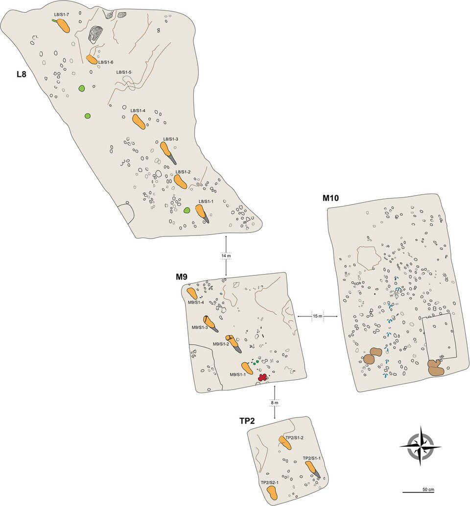
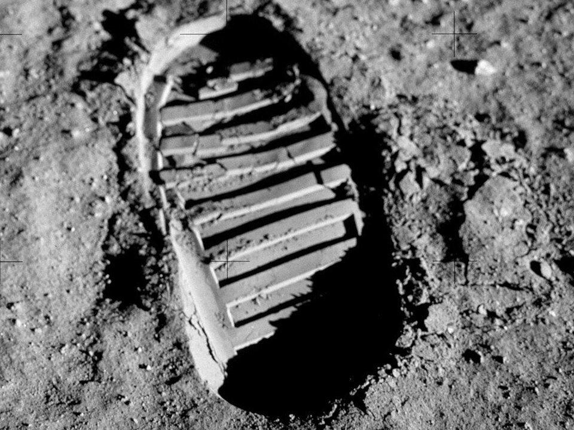

<!doctype html>
<html lang="zh">
<head>
<meta charset="utf-8">
<link rel="stylesheet" href="assets/base.css">
<link rel="stylesheet" href="assets/theme.css">
<style>
:root {
  --bg:        #0b0e14;
  --text:      #e6e6e6;
  --font-sans: "Noto Sans SC", system-ui, sans-serif;
}

/* Override #main width/height from theme.css to fit stage's content area */
#main {
  width: 100%;
  height: 100%;
  display: flex;
  flex-direction: column;
  overflow: hidden;
}

/* ==== Page-03 layout ==== */
.p03-lead {
  text-align: center;
  font-size: var(--fs-lead);
  line-height: 1.5;
  color: var(--text);
  padding: 4px 48px 0;
  flex: 0 0 auto;
}
.p03-lead em {
  font-style: normal;
  color: var(--accent);
  font-weight: 600;
}

/* — Photo row — */
.p03-photo-row {
  display: flex;
  align-items: center;
  justify-content: center;
  gap: 0;
  flex: 0 0 auto;
  padding: 4px 32px 0;
}
.p03-photo-col {
  flex: 1 1 0;
  min-width: 0;
  display: flex;
  flex-direction: column;
  align-items: center;
}
.p03-photo-frame {
  width: 82%;
  max-width: 260px;
  aspect-ratio: 1 / 1;
  border-radius: 14px;
  overflow: hidden;
  border: 1px solid rgba(255,255,255,0.08);
  background: #141a26;
  box-shadow: 0 4px 24px rgba(0,0,0,0.4);
}
.p03-photo-frame img {
  width: 100%;
  height: 100%;
  object-fit: cover;
  display: block;
}
.p03-photo-caption {
  font-size: var(--fs-label);
  color: var(--muted);
  text-align: center;
  margin-top: 6px;
  line-height: 1.3;
}

/* — Timeline — */
.p03-timeline-col {
  flex: 0 0 56px;
  min-width: 0;
  display: flex;
  flex-direction: column;
  align-items: center;
  align-self: stretch;
  position: relative;
}
.p03-timeline-line {
  flex: 1;
  width: 2px;
  border-left: 2px dashed rgba(255,255,255,0.15);
  position: relative;
  margin: 6px 0;
}
.p03-timeline-marker {
  position: absolute;
  left: 50%;
  transform: translateX(-50%);
  display: flex;
  flex-direction: column;
  align-items: center;
  gap: 2px;
}
.p03-timeline-marker .dot {
  width: 12px;
  height: 12px;
  border-radius: 50%;
  background: var(--accent);
  border: 2px solid var(--bg);
  box-shadow: 0 0 8px rgba(79,110,242,0.4);
}
.p03-timeline-marker .label {
  font-size: var(--fs-label);
  color: var(--muted);
  white-space: nowrap;
  line-height: 1.2;
}
.p03-timeline-marker.top {
  top: 0;
}
.p03-timeline-marker.bottom {
  bottom: 0;
}

/* — Comparison table — */
.p03-compare-wrap {
  flex: 1 1 auto;
  min-width: 0;
  display: flex;
  justify-content: center;
  padding: 2px 48px 0;
}
.p03-compare-wrap .k-comparison {
  width: 100%;
  max-width: 1100px;
}

/* Dark theme overrides for k-comparison */
.k-comparison .hdr {
  color: var(--text);
  border-bottom-color: rgba(255,255,255,0.15);
  font-size: var(--fs-label);
}
.k-comparison .dim {
  color: var(--muted);
  font-size: var(--fs-label);
}
.k-comparison .rowline {
  border-top-color: rgba(255,255,255,0.08);
}
.k-comparison > div:not(.hdr):not(.dim):not(.rowline) {
  font-size: var(--fs-sec);
  color: var(--text);
  line-height: 1.35;
  padding: 2px 0;
}

/* — Closing sentence — */
.p03-close {
  text-align: center;
  font-size: var(--fs-sec);
  color: var(--muted);
  line-height: 1.5;
  padding: 4px 48px 2px;
  flex: 0 0 auto;
}
</style>
</head>
<body data-page="03" data-total="50">
<div id="stage">
<main id="main"></main>
</div>
<script src="assets/base.js"></script>
<script src="assets/lec.js"></script>
<script>
(function() {
  'use strict';

  /* ===== 全套口径常量 ===== */
  var P03 = {
    LAETOLI_YEARS_AGO: 3.66e6,   // Laetoli 脚印（全套口径）
    MOON_LANDING_YEAR: 1969      // 阿波罗 11 号（全套口径）
  };

  /* ===== 挂载页眉页脚 ===== */
  Lec.mount({
    index: 3,
    kicker: '第 0 章 开场',
    title: '两个脚印',
    take: '两个相隔 366 万年的脚印几乎一模一样——身体没变，世界已变'
  });

  /* ===== 构建内容 ===== */
  var main = document.getElementById('main');

  // — 1. 导语句 —
  var lead = document.createElement('div');
  lead.className = 'p03-lead';
  lead.innerHTML = '两枚脚印，相隔 <em>约 ' + Deck.fmt(P03.LAETOLI_YEARS_AGO / 1e6) + ' 万年</em>，形状几乎一样——<strong>身体没有大变</strong>。';
  main.appendChild(lead);

  // — 2. 照片行 —
  var photoRow = document.createElement('div');
  photoRow.className = 'p03-photo-row';

  // 左栏：Laetoli
  var leftCol = document.createElement('div');
  leftCol.className = 'p03-photo-col';
  leftCol.innerHTML =
    '<div class="p03-photo-frame">' +
      '' +
    '</div>' +
    '<div class="p03-photo-caption">Laetoli · 坦桑尼亚</div>';
  photoRow.appendChild(leftCol);

  // 时间轴列
  var timelineCol = document.createElement('div');
  timelineCol.className = 'p03-timeline-col';
  var tLine = document.createElement('div');
  tLine.className = 'p03-timeline-line';
  tLine.innerHTML =
    '<div class="p03-timeline-marker top">' +
      '<div class="dot"></div>' +
      '<div class="label">' + P03.MOON_LANDING_YEAR + ' 年</div>' +
    '</div>' +
    '<div class="p03-timeline-marker bottom">' +
      '<div class="dot"></div>' +
      '<div class="label">距今约 ' + Deck.fmt(P03.LAETOLI_YEARS_AGO / 1e6) + ' 万年</div>' +
    '</div>';
  timelineCol.appendChild(tLine);
  photoRow.appendChild(timelineCol);

  // 右栏：月球
  var rightCol = document.createElement('div');
  rightCol.className = 'p03-photo-col';
  rightCol.innerHTML =
    '<div class="p03-photo-frame">' +
      '' +
    '</div>' +
    '<div class="p03-photo-caption">月球 · 静海</div>';
  photoRow.appendChild(rightCol);

  main.appendChild(photoRow);

  // — 3. 对照表（k-comparison） —
  var compWrap = document.createElement('div');
  compWrap.className = 'p03-compare-wrap';

  var comp = document.createElement('div');
  comp.className = 'k-comparison';
  comp.style.setProperty('--k-comp-cols', '2');

  comp.innerHTML =
    '<div class="hdr"></div>' +
    '<div class="hdr">366 万年前 · Laetoli</div>' +
    '<div class="hdr">1969 年 · 月球</div>' +

    '<div class="rowline"></div>' +

    '<div class="dim">时间</div>' +
    '<div>约 ' + Deck.fmt(P03.LAETOLI_YEARS_AGO / 1e6) + ' 万年前</div>' +
    '<div>' + P03.MOON_LANDING_YEAR + ' 年</div>' +

    '<div class="rowline"></div>' +

    '<div class="dim">地点</div>' +
    '<div>坦桑尼亚 Laetoli</div>' +
    '<div>月球静海</div>' +

    '<div class="rowline"></div>' +

    '<div class="dim">留下它的人</div>' +
    '<div>南方古猿</div>' +
    '<div>智人（阿波罗 11 号）</div>' +

    '<div class="rowline"></div>' +

    '<div class="dim">地面</div>' +
    '<div>火山灰（凝灰岩）</div>' +
    '<div>月壤</div>' +

    '<div class="rowline"></div>' +

    '<div class="dim">它意味着</div>' +
    '<div>已知最早的双足行走证据之一</div>' +
    '<div>人类第一次踏上另一天体</div>';

  compWrap.appendChild(comp);
  main.appendChild(compWrap);

  // — 4. 收束句 —
  var close = document.createElement('div');
  close.className = 'p03-close';
  close.innerHTML = '从东非的脚印到月球上的脚印，是<strong style="color:var(--accent)">同一条演化之路</strong>。';
  main.appendChild(close);

})();
</script>
</body>
</html>